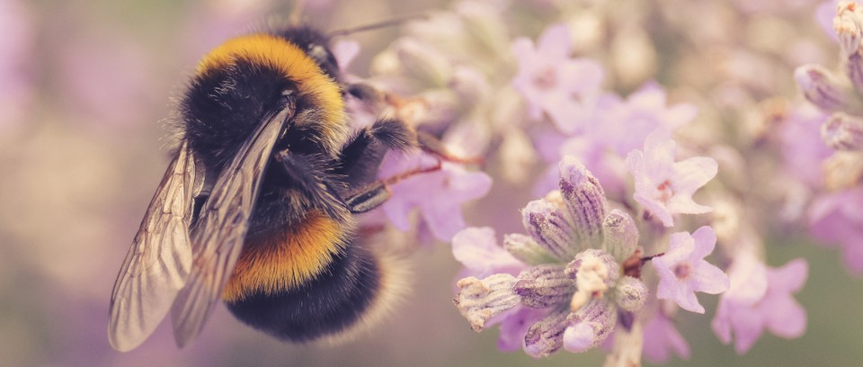

Aromatherapy in the Apiary Is What Bees Need
To fill your homes with blueberries, sunflowers and almonds, farmers rent honeybees. When all goes well, the bees pollinate the flowers, resulting in ample yields. But sometimes the rental bees buzz off and pollinate wildflowers instead.
The problem is a matter of timing. For a hive to pollinate crops well, it needs to be settled and happy in its environment. That means it should be placed on a farm before the crop blooms. But when crops flower later than farmers expect them to, rental bees may develop a predilection for nectar from wildflowers near the fields — and ignore the crops.
Walter M. Farina, a biologist at the University of Buenos Aires, and his colleagues have figured out a solution to this problem involving scent, which they reported on Thursday in the journal Current Biology.
Dr. Farina knew from previous work that hives remember the scents of food collected in the past. Most importantly, he knew that these memories could bias where bees forage.
“This led us to wonder if we could guide bees to specific crops by inserting an odor of that crop into a hive and giving them a memory of food they never had,” Dr. Farina said.
Over the course of six years, Dr. Farina and his colleagues placed scented sugar water into hives that had been placed next to Argentine sunflower farms. In some cases, the hives were given water laced with sunflower fragrance. As a control, some hives were given water laced with jasmine. To keep track of which bees were being exposed to the different solutions, the researchers put colored powders at the entrance to the hives such that bees exposed to sunflower scent were stained blue and those exposed to jasmine were pink.
To monitor the response of the insects, the team installed transparent walls in hives and recorded the bees dancing. Known as the waggle dance, bees dance to tell hivemates where they have found food. The researchers studied these dances to determine where the bees were foraging.
To further study how the bees were responding, Dr. Farina and his colleagues placed pollen traps inside the hives that collected pollen grains off bees returning from foraging activities that were later brought to the lab for identification. The researchers also went out into the sunflower fields, captured bees foraging there and took note of whether they were pink or blue.
The results could not have been clearer, with a variety of measurements suggesting that the sunflower scent had increased crop pollination. When the farmers reported their yields, this was confirmed: Fields adjacent to hives given the sunflower solution produced between 37 percent and 61 percent more sunflower seeds than did fields next to the jasmine hives.
The work was lauded by other entomologists.
“This is real work being done in real fields rather than just the lab,” said Martin Giurfa, who studies bee behavior at CNRS Toulouse in France. “These are incredibly encouraging findings.”
The study may be good news for more than just farmers.
Wild pollinators like bumblebees, carpenter bees and mason bees often struggle when exposed to competition from rental bees.
“Our scent technique might help better focus the rental bees on crops and relieve pressure on native pollinators,” Dr. Farina said. Dr. Giurfa agreed this is possible, but added, “we need field studies on these other pollinators to know for sure.”
Leave a comment